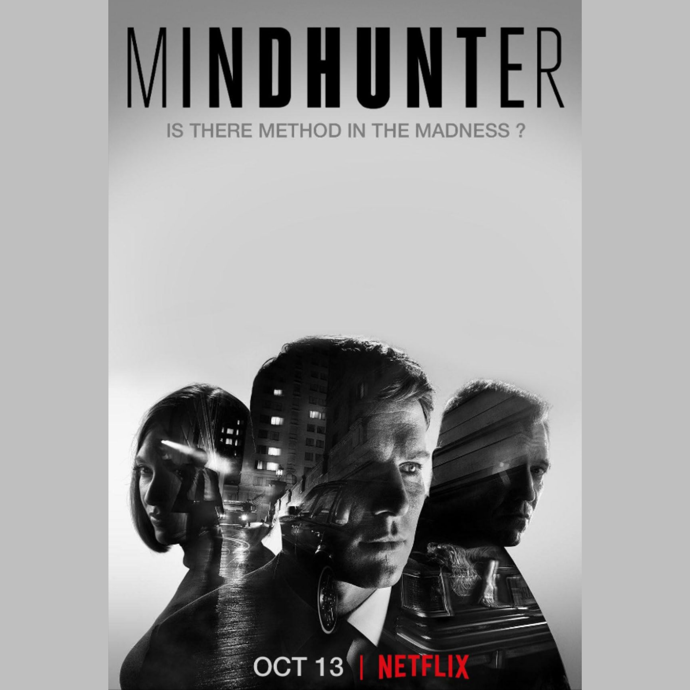

TV series offer an immersive and addictive storytelling experience that keeps audiences coming back for
more. With complex characters, intricate plotlines, and multi-episode arcs, TV shows provide an opportunity
to deeply invest in narratives and explore diverse worlds in depth. Whether it's drama, comedy, sci-fi, or
fantasy, TV series cater to every taste, offering a wide range of genres and themes to suit all preferences.
Additionally, the episodic format allows for character development and narrative depth that surpasses that
of many films. TV series also provide a sense of community and connection, as fans engage in discussions,
theories, and debates about their favorite shows. So, whether you're binge-watching a classic series or
eagerly awaiting the next episode of a new release, TV series offer an unparalleled entertainment experience
that can be enjoyed solo or with friends and family.
"Black Mirror" is a dystopian science fiction anthology series
created by Charlie Brooker. It first premiered in 2011 and has since gained widespread
acclaim for its thought-provoking exploration of the dark side of technology and its impact
on society. Each episode presents a standalone story set in a near-future or alternate
reality, examining themes such as privacy, identity, artificial intelligence, social media,
and the consequences of technological advancements. "Black Mirror" is known for its
unsettling and often chilling narratives, as well as its sharp social commentary and
innovative storytelling techniques. The series has garnered a dedicated fanbase and has
received numerous awards and nominations, solidifying its status as one of the most
groundbreaking and influential television shows of the 21st century.
"Breaking Bad" is a critically acclaimed television series created
by Vince Gilligan that premiered in 2008. The show follows the transformation of Walter
White, a high school chemistry teacher turned methamphetamine manufacturer, portrayed by
Bryan Cranston. Faced with a terminal cancer diagnosis and financial struggles, Walter
partners with former student Jesse Pinkman, played by Aaron Paul, to produce and distribute
methamphetamine in order to secure his family's financial future.
As the series progresses, Walter becomes increasingly enmeshed in the criminal underworld,
leading to moral dilemmas, betrayals, and escalating violence. "Breaking Bad" is praised for
its complex characters, taut storytelling, and exploration of themes such as morality,
power, and the consequences of one's actions.
Throughout its five-season run, "Breaking Bad" garnered widespread critical acclaim and
amassed a devoted fanbase. It won numerous awards, including 16 Primetime Emmy Awards, and
is often regarded as one of the greatest television series of all time.

"Mindhunter" is a gripping crime drama television series created by
Joe Penhall, based on the true-crime book "Mindhunter: Inside the FBI's Elite Serial Crime
Unit" by John E. Douglas and Mark Olshaker. The show premiered in 2017 on Netflix. Set in
the late 1970s and early 1980s, "Mindhunter" follows FBI agents Holden Ford (played by
Jonathan Groff) and Bill Tench (played by Holt McCallany), along with psychologist Wendy
Carr (played by Anna Torv), as they pioneer the development of criminal profiling and
behavioral science within the FBI.
The series delves into the agents' interviews with real-life serial killers to understand
their motivations and methods, leading to groundbreaking insights into criminal psychology.
As they delve deeper into the minds of these killers, the agents grapple with their own
moral and psychological challenges. "Mindhunter" is praised for its meticulous attention to
detail, compelling performances, and psychological depth, offering a chilling and
thought-provoking exploration of the darkest corners of the human psyche. Despite its
critical acclaim, "Mindhunter" was put on indefinite hold after its second season, leaving
fans eagerly awaiting its potential continuation.
"Sherlock" is a contemporary adaptation of Sir Arthur Conan Doyle's
Sherlock Holmes detective stories, created by Steven Moffat and Mark Gatiss. The series
first aired in 2010 and stars Benedict Cumberbatch as Sherlock Holmes and Martin Freeman as
Dr. John Watson.
Set in modern-day London, "Sherlock" follows the brilliant but eccentric consulting
detective Sherlock Holmes as he solves complex crimes with his keen powers of observation
and deduction. Dr. John Watson, a former army doctor, becomes Holmes's flatmate and close
friend, accompanying him on his investigations and chronicling their adventures.
The series is praised for its clever writing, sharp dialogue, and dynamic performances by
Cumberbatch and Freeman. It also incorporates modern technology and updates to the original
stories, while staying true to the spirit of Conan Doyle's work.
"Sherlock" has received widespread critical acclaim and has garnered numerous awards,
including Emmy Awards and BAFTAs. It has also gained a large and dedicated fanbase around
the world. Despite occasional breaks between seasons, the series remains highly regarded for
its innovative take on the iconic detective and its compelling storytelling.